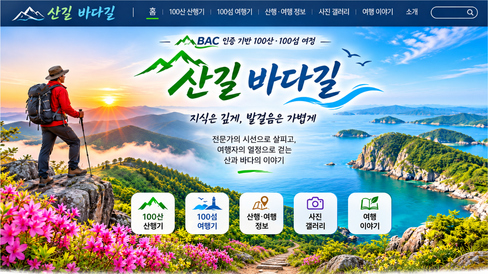

산길 바다길 — BAC 인증 기반 100산·100섬 여정

산길 바다길 홈
⛰ 100산 산행기
🏝 100섬 여행기
산행·여행 정보
사진 갤러리
여행 이야기
산·섬·산행 기록 검색
산길 바다길
— 직접 걸으며 기록한 산과 섬, 그 길의 이야기
100대 명산 지도
섬&산100 지도
영남알프스
해외 트래킹
네이버 산행 블로그
대표 홈
닫기
산·섬·산행 기록 찾기
이동
산·섬 이름, 지역, 날짜 또는 메뉴를 입력하세요.